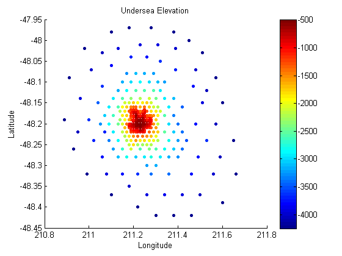

This is an example of how to add a vertical colorbar to a plot in MATLAB®.
Read about the colorbar function in the MATLAB® documentation.
Go to MATLAB Plot Gallery
% Load sea elevation data load seamount x y z; % Create a scatter plot of the data figure; scatter(x, y, 10, z, 'filled'); % Add title and axis labels title('Undersea Elevation'); xlabel('Longitude'); ylabel('Latitude'); % Add a vertical color bar - default position is to the right of the plot colorbar;